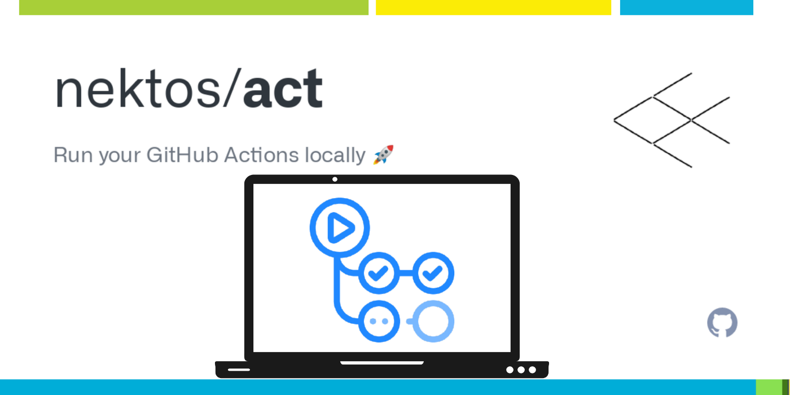
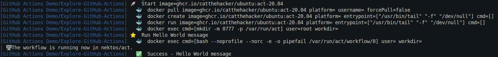

Build and run GitHub Actions locally using nektos/act
{kind=link}
For those who don’t know, GitHub Actions are GitHub’s answer to CI (Continuous Integration). Like so many other such pipeline systems, Actions are triggered by events in your Git repo, and based on the event and/or the branch(es) in question, will run a series of automated actions.
- Build my code
- Test my code
- Package my code
- Tag / version my code
- Deploy my code
- Send cute notifications to Slack when the above is done
- etc
nektos/act, is an open source GitHub Actions emulator.
- We can use nektos/act to run the actions locally instead of needing to commit/push every time we want to test out the changes we’re making to our
.github/workflows/files (or any changes to embedded GitHub actions) - With act, we can use the GitHub Actions defined in our
.github/workflows/to replace the Makefile! - act even though is not a 100% emulator of GitHub Actions but does address the majority of scenarios that we need for GitHub Actions.
How Does It Work?
- Creating and operating a container that executes the action code, act simulates the actions we want to do. Because custom/marketplace actions are simply saved in other repositories, it's up to act to grab this logic from these repositories and create a container capable of running the steps in question depending on the logic at hand.
- As a result, rather than having to wait for the aforementioned push to origin/GitHub Actions to commence, we can observe our GitHub Actions processes starting instantly with a single command line statement.
Installation
act depends on docker, so you should have installed
download and install act
curl https://raw.githubusercontent.com/nektos/act/master/install.sh | sudo bash
Running act
Copy the sample content below to a test.yml file at .github/workflows/ in your repository
Now git add .github/workflows/test.yml and git commit the test.yml file to a branch in your repository
Open a terminal and run act command
The first time you run act command will appear a prompt to choose an image size (I recommend medium size).
The result process will be as follows
The --verbose flag from act does not allow you to filter log steps, but instead you can use grep and unbuffered command for this
In order to pass GITHUB_TOKEN, SSH_KEY or any other environment variable you can create a .secrets file and pass it as a command with the --secret-file flag